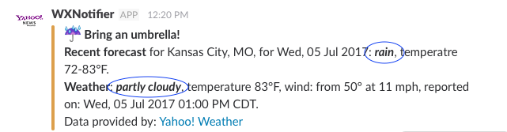
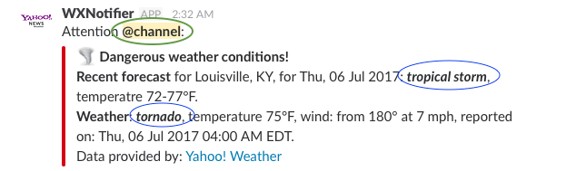
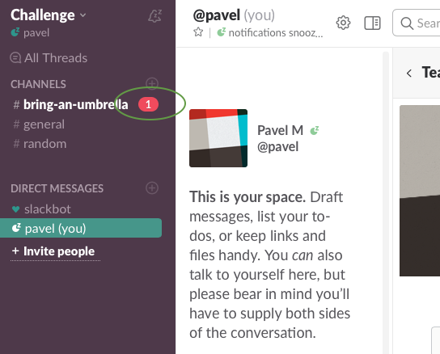

This app is designed to send updates to a Slack channel about rainy weather, or severe weather conditions.
Since the app is using real time data, for presentational purposes I manually pick one of the recent rainy locations, so the app performs periodic postings. The app posts to the
#bring-an-umbrella channel of the
challengespace Slack space.
For presentational purposes, the app is sitting on my computer and is launched by
Cron automatically every 5 minutes. When that happens, the app retrieves the location from the
Configuration file, and requests the recent reported weather conditions and forecast for that location from
Yahoo! Weather API. After that, the app checks if the obtained data is newer than what has been stored in the
file. If that's the case, it updates the data in the file, and then, if rainy weather is reported of forecast, it sends the message to the specified Slack channel. Also, if dangerous weather conditions (tornado, tropical storm, hurricane) are reported or forecast, it sends the message along with the notifications to all the subscribers of the channel.
The app is written in Python 2.7, and can be launched by executing the
main file. To install the app simply copy the whole directory to any machine having Python 2.7 installed; install the missing packages if needed (listed in lines 1-2 in the
main file).
The code is commented and pretty much self-explanatory. Please don't hesitate to ask me if you have any questions.
Both the forecast and observation are checked:

The app will only post to Slack if newer information is obtained, and the weather remains rainy, or dangerous phenomena occur or persist.
Messages about dangerous weather phenomena (tornado, tropical storm, hurricane) look different and trigger notifications:


Dangerous weather phenomena have higher priority, e.g. if the forecast says "tornado", and the observation says "rain" (or vice versa), the "dangerous weather" scenario will be executed.